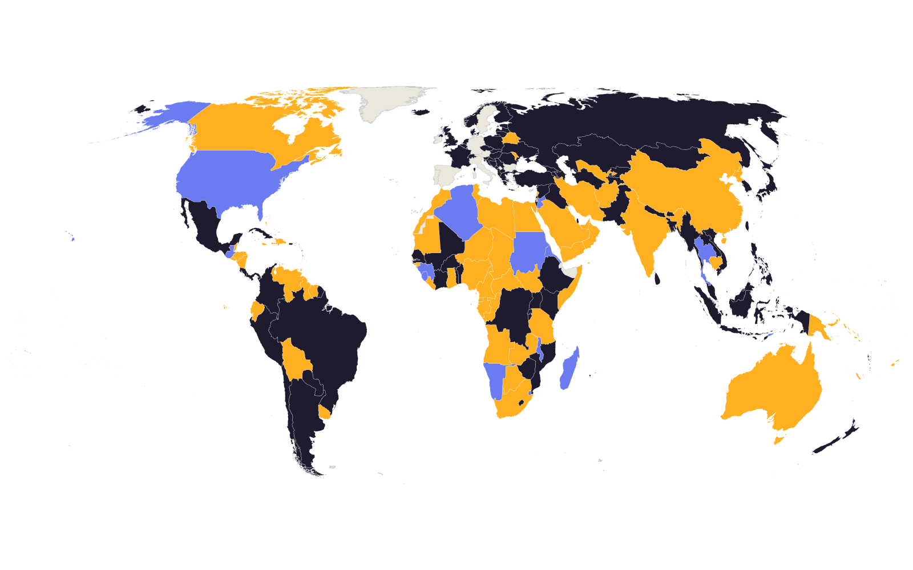

Open the mapR&D engineer and data scientist. PhD candidate in the applications of data science, statistical modelling and AI.

Open the mapTen years in R&D and process development. Bespoke pilot-scale equipment for a net-zero magnesium technology and for a lignite-drying process, from mechanical design through fabrication and commissioning, alongside CFD and process documentation. Earlier work covered hands-on R&D commercialising a CSIRO titanium process, and CAD and CNC workflows for a boutique guitar manufacturer.